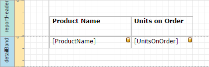
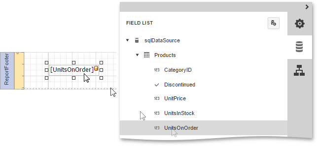
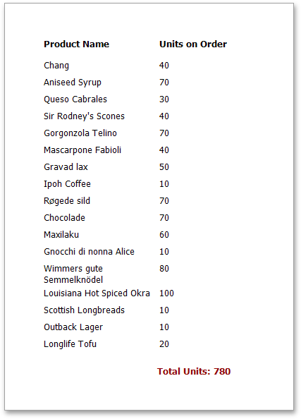

Calculating Summaries
With Report Designer, you can force a data-bound control to calculate one of the standard summary functions (Average, Sum, Count, Max, Min, etc.)
To calculate summaries (totals) within a report, follow the instructions below.
Create a new report and bind it to a data source. In this tutorial, we'll start with the following report layout.

To display a summary at the bottom of the report, add a Report Footer band.

Switch to the Field List panel, select the field for which a summary will be calculated and drop it onto the created Report Footer band.

Now, switch to the Properties Panel, select the newly created Label and expand the Actions or Data category. In the Summary section, specify the arithmetic function and the report area, for which this arithmetic function is calculated.

Set the Func property to Sum. Note that in addition to a simple summary, you can choose among numerous built-in functions (such as Count and Average).
Set the Running property to Report, so that the sum is calculated for the entire report.
Select the Ignore Null Values checkbox, so that if a dataset contains such records, they will not affect the sum.
You can also define a summary function's Format String. Note that value formatting is applied to a summary independent of general formatting and has priority over it too.
Switch your report to the Preview mode to view the result.
